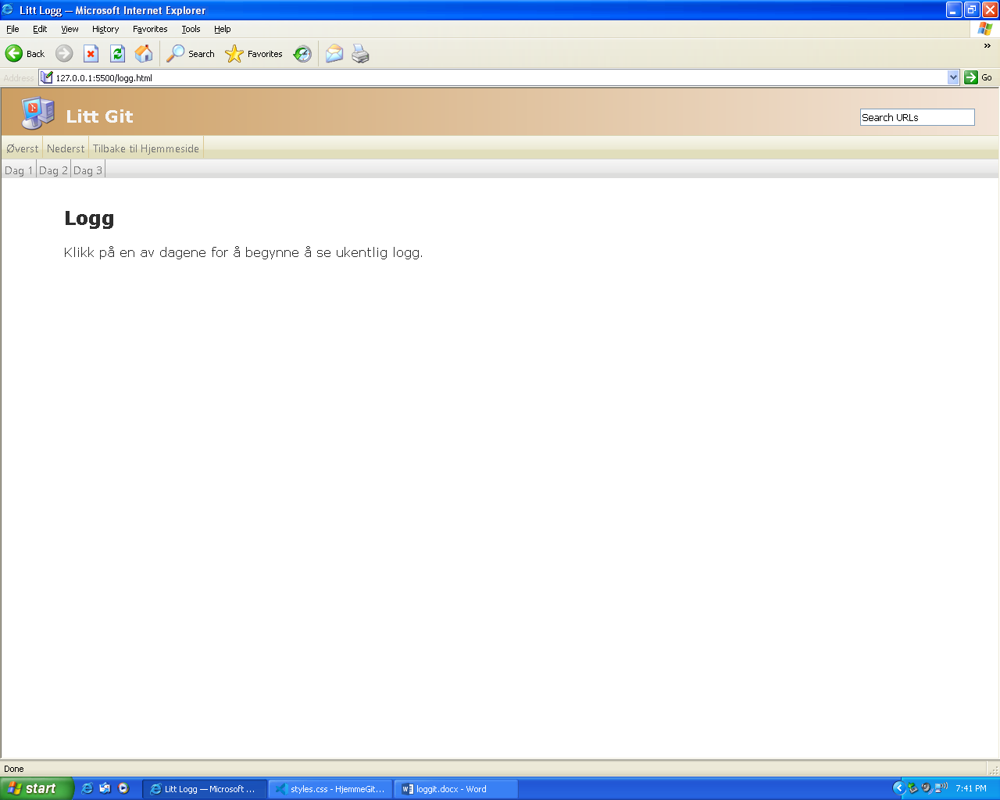
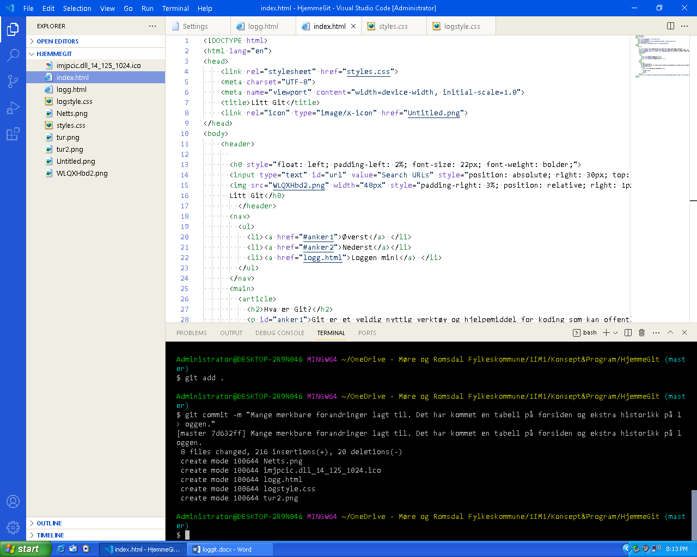

Logg
Klikk på en av dagene for å begynne å se ukentlig logg.
Dag 1: I dag har jeg begynt litt med designet på hjemmesiden, men har ikke begynt med andresiden. Jeg har også laget et ikon, eller mer spesifikt, funnet et og forandret på det.

Dag 2: Det jeg har gjort i dag er å fikse headeren. Headeren virker litt stor og bakgrunnen på den vil ikke funke slik den skal. Heldigvis så har jeg klart å skalere den. Jeg har enda ikke gjort en commit i git på lenge. Jeg skal også prøve på å få til en sidemeny på logg.html hvor man kan følge med på de forskjellige dagene i loggen. Jeg får se om jeg orker å få det til fordi det kan hende at jeg må bruke javascript.
Dag 3: Jeg har gjort noen vesentlige forandringer med logg.html og jeg droppet sidemenyen fordi det ville bli for komplisert. Jeg har også jobbet litt med nettsidene hjemme og en tabell er blitt lagt til. Prosjektet har også blitt commitet. Her har du to bilder som viser en commit og hvordan loggen ser ut:  
{kind=link}
{kind=link}
Dag 4: I dag har jeg prøvd å laste opp proskjektet på Github, men det ble en feil med branch-navnene så jeg måtte slette master-branchen på github og endret navnet på main til master. Da ble git veldig forvirret og sluttet å virke skikkelig. Ingen har klart å hjelpe meg med problemet.
Dag 5 og 6: Nå fant jeg ut problemet med github. Jeg måtte skrive push --force origin master for å erstatte alt tomrommet i repositumet. Jeg har også skrevet mye mer om Git på hjemmesiden og siden har jeg også lagt til et nytt commit på github.